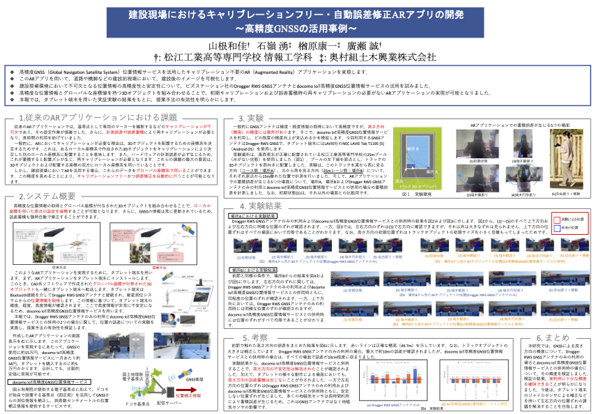
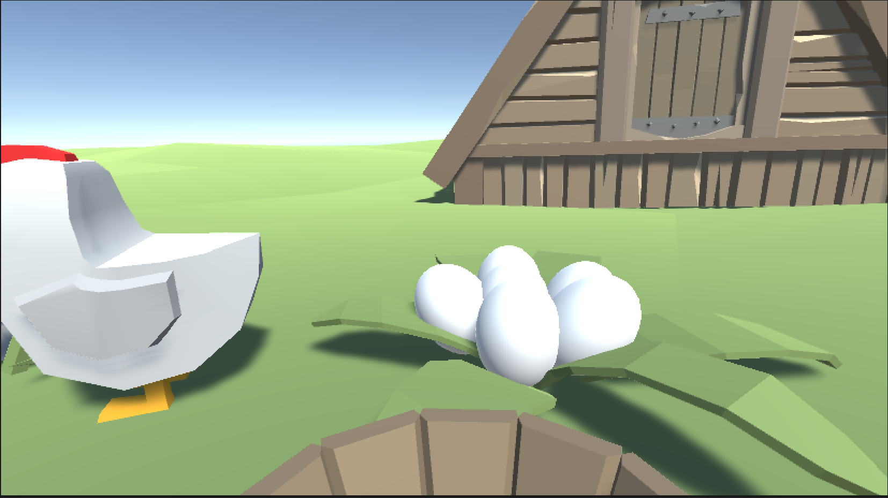
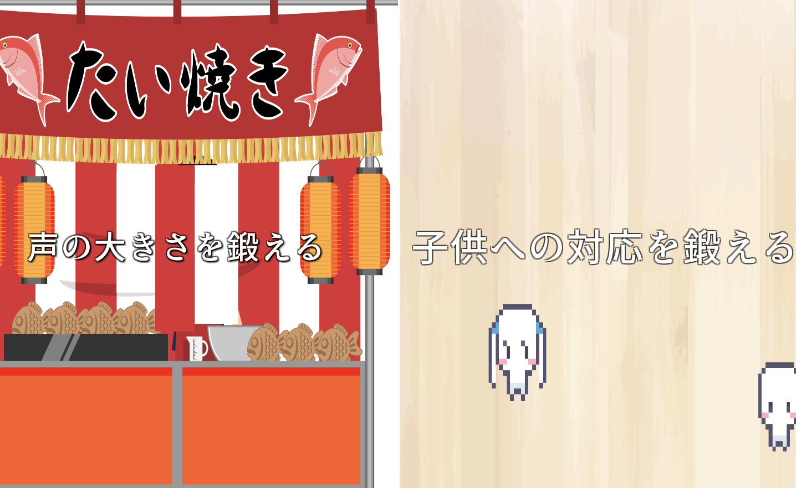
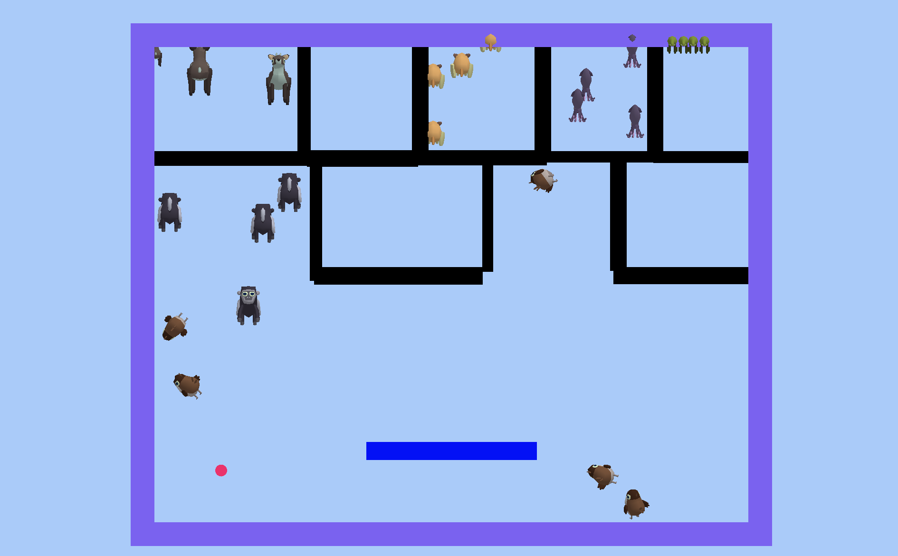

山根和佳のポートフォリオ
企業との共同研究
学会発表した際のURL:https://www.tc-iaip.org/view/2023/program.html

私の人生における最大の成長は、企業との共同研究を通して、自ら課題を見つけ、解決のために試行錯誤し、結果を出すまで粘り強く取り組む能力を培ったことです。この研究では高精度GNSS位置情報サービスを活用することで、初期キャリブレーション不要かつ誤差を自動修正するARアプリの実現を目指しましたが、当初は位置情報の精度が安定しないという課題に直面しました 。しかし検証を重ねた結果、実用可能なレベルにまで精度を向上させることができました。この成果をVEW2023という学会で発表できたことは、大きな達成感に繋がりました。 この経験を通じて、自身の頭で深く考え、問題の本質を捉え、検証を繰り返しながら解決策を導き出すという、研究者としての基礎的な姿勢と、困難にぶつかっても諦めずに挑戦し続ける精神力を身につけることができました。これが、私の人生における最大の成長だと確信しています。
作業期間：2022年4月 - 2024年3月
使用したツール、言語、画材などの素材:C#,Unity,android studio
個人で開発したアプリ
1.小泉八雲にちなんだマーカーフリーなARアプリ
小泉八雲の作品に基づいたイラストを現実世界に合成表示し、写真撮影できるARアプリを開発しました。 GPS情報と物体検出技術を組み合わせることで、従来のARマーカーを必要とせず、人物の画面内での位置とサイズに基づく動的なイラスト配置を実現しています。 GPSによる位置誤差は最大で数メートル程度でしたが、設定した閾値内で適切にイラストを表示できることを確認しました。 物体検出に関しては、高精度で人物を識別し、適切な大きさ・位置にイラストを配置できることが実証されました。
作業期間：2024年4月 - 2025年3月
使用したツール、言語、画材などの素材:C#,Unity,YOLO
2.鶏危機一髪

UnityとC#を主に用いて開発した、鶏の卵を収穫するゲームです。 卵を産んだ親鶏が振り向く前にタイミングを見て卵を収穫します。卵を収穫している最中に親鶏に気付かれると、体力が減ってしまいます。
作業期間：2020年8月 - 2020年9月
使用したツール、言語、画材などの素材:C#,Unity
3.トリックオアトリート
exeファイルをダウンロードできるリンク： https://drive.google.com/drive/folders/1RiWFG5MKcfQEDNXdpidvkt1ZMpW-EL0l?usp=drive_link
DXライブラリとC++で開発したハロウィンをテーマにしたゲームです。 子供、おばけ、強盗が家を訪れる設定で、それぞれのノックの音を聞き分け、適切な対応をすることでゲームを進めます。 強盗に対してはドアを開けずにバックスペースキーを連打して追い返し、おばけは無視、子供にはドアを開けてお菓子をあげます。 お菓子が不足するとゲームオーバーとなります。
作業期間：2021年8月 - 2021年9月
使用したツール、言語、画材などの素材:DXライブラリ，C++
3.はきはき
に飛ぶ画像はこちら↓

https://wamikan.github.io/hakihaki/index.html
UnityとC#を主に用いて開発した、声の大きさを鍛えるモードと子供とのやりとりを鍛えるモードを持つゲームです。 声の大きさを鍛えるモードでは、たい焼き屋さんでの注文に見立てて、画面表示された文章を声に出して読み上げ、声の大きさが足りないと聞き返されます。 子供とのやりとりを鍛えるモードでは、子供たちの呼びかけに対して適切なボタンを押し、子供たちが近づきすぎたらスタート画面に戻ります。今回Web上で公開するにあたって，声の大きさを鍛えるモードでマイクが使えなくなっています．
作業期間：2022年8月 - 2022年9月
使用したツール、言語、画材などの素材:C#,Unity
4.ボール崩し
に飛ぶ画像はこちら↓

ボールを当ててブロックを崩すゲームです。ボールを落とすとゲームオーバーになります。左右キーで操作でき，ゲームオーバーになるとスペースキーでリトライできます．
作業期間：2023年8月 - 2023年9月
使用したツール、言語、画材などの素材:C#,Unity
個人で開発した地域紹介Webサイト
に飛ぶ画像はこちら↓
 作業期間：2022年7月 - 2022年8月
チームで開発したアプリ
大学のアプリ開発サークルJackで、今までに以下の2つのアプリをチーム開発しました。
1.ノイキャン聖徳太子 https://unityroom.com/games/jackhack2025_h
聖徳太子に向かって飛んでくるノイズをブロックし、クイズに答えるゲームです。
作業期間：2023年8月 - 2023年9月
使用したツール、言語、画材などの素材:C#,Unity
担当業務：ゲーム部分・結果画面の制作と、1年生のサポート
2.MEいTAい祭
https://jack-app.github.io/meidaisai2025F/
プログラミングを体験しつつゲーム作成を行うWebアプリです。
作業期間：2023年8月 - 2023年9月
使用したツール、言語、画材などの素材:C#,Unity
担当業務：スタート画面・選択画面・結果画面の制作と、1,2年生のサポート
また、自分のスキルや得意分野をより正確に伝えるためにも、チームで作った作品を掲載する場合は、チーム内の環境や雰囲気、担当業務なども
インターン
1.株式会社八雲ソフトウェア
2023年9月
Amazon Alexa スキルのアイデア出しを行いました。各チームはスキルのコンセプトを独自に考案し、その後それぞれのアイデアを発表しました。自分たちのチームは、使用者が話しかけた音声を動物の鳴き声に翻訳するというアイデアを発表しました。発表の後、会社の方から動物を自分で選べるようにしてはどうかとアドバイスをいただいたため、多くの動物の鳴き声を実装することにしました。
その後、アイデアの評価を参考にして、各チームはアレクサスキルの開発に取り組みました。スキルの開発には、プログラミングやコーディングのスキルが必要であり、チームメンバー間での協力が不可欠でした。途中行き詰まる部分もありましたが、社員の方にさまざまなことを教えていただいて、タッチ操作で動物を選んで話しかけると動物の鳴き声が返ってくるスキルが完成しました。スキルの開発が完了すると、Web サイトの制作とスキルの発表用スライド作成に移りました。Web サイトは、プロジェクトに関する情報を提供し、スキルに関連する詳細な情報を提供するためのものでした。
最終日には、学校の先生方を招いてスキルの発表と Web サイトの発表を行いました。各チームは、自分たちの開発したアレクサスキルや Web サイトについて詳細な説明をし、その成果物をプレゼンテーションしました。先生方からは貴重なコメントやフィードバックをいただき、プロジェクトの成果を振り返りました。
2.株式会社ジェイ・クリエイション本社
2023年9月
まず社員の方から IT エンジニアとして心得ておくといいことを教えていただきました。プログラマーの場合、就職してから最初の10 か月間がとても大事で、その期間の過ごし方によってその後の伸びが変わるということなどをお聞きしました。
次に、システム開発の基本原則、Web開発におけるHTMLとCSS の基礎を学びました。また。Web アプリケーションの開発においてJavaServlet、Java JSP、JavaScript の重要性について理解しました。この知識を活用して、求人情報閲覧システムというWeb アプリケーションを作成しました。
そしてAWSに関する重要な概念について学びました。
最終日には、簡単な入社試験のようなものと性格診断テスト、模擬面接、インターンシップについてのプレゼンテーションを行いました。その後一回社員の方と自分のことについての面接をした後、性格診断の結果をもとにした就職に関するアドバイスをいただきました。プレゼンテーションでは、インターンシップを通して学んだことなどを社員の方や他のインターンシップ参加者へ向けて発表しました。
スキルと特徴
C++
Android Studio
iOS
Algorithm
C言語
TypeScript
React
Unity
C#
Java
機械学習
ネットワーク
R
データマイニング
Git
React.js
ハードウェア
Linux
HTML
CSS
AWS
SQL
作業期間：2022年7月 - 2022年8月
チームで開発したアプリ
大学のアプリ開発サークルJackで、今までに以下の2つのアプリをチーム開発しました。
1.ノイキャン聖徳太子 https://unityroom.com/games/jackhack2025_h
聖徳太子に向かって飛んでくるノイズをブロックし、クイズに答えるゲームです。
作業期間：2023年8月 - 2023年9月
使用したツール、言語、画材などの素材:C#,Unity
担当業務：ゲーム部分・結果画面の制作と、1年生のサポート
2.MEいTAい祭
https://jack-app.github.io/meidaisai2025F/
プログラミングを体験しつつゲーム作成を行うWebアプリです。
作業期間：2023年8月 - 2023年9月
使用したツール、言語、画材などの素材:C#,Unity
担当業務：スタート画面・選択画面・結果画面の制作と、1,2年生のサポート
また、自分のスキルや得意分野をより正確に伝えるためにも、チームで作った作品を掲載する場合は、チーム内の環境や雰囲気、担当業務なども
インターン
1.株式会社八雲ソフトウェア
2023年9月
Amazon Alexa スキルのアイデア出しを行いました。各チームはスキルのコンセプトを独自に考案し、その後それぞれのアイデアを発表しました。自分たちのチームは、使用者が話しかけた音声を動物の鳴き声に翻訳するというアイデアを発表しました。発表の後、会社の方から動物を自分で選べるようにしてはどうかとアドバイスをいただいたため、多くの動物の鳴き声を実装することにしました。
その後、アイデアの評価を参考にして、各チームはアレクサスキルの開発に取り組みました。スキルの開発には、プログラミングやコーディングのスキルが必要であり、チームメンバー間での協力が不可欠でした。途中行き詰まる部分もありましたが、社員の方にさまざまなことを教えていただいて、タッチ操作で動物を選んで話しかけると動物の鳴き声が返ってくるスキルが完成しました。スキルの開発が完了すると、Web サイトの制作とスキルの発表用スライド作成に移りました。Web サイトは、プロジェクトに関する情報を提供し、スキルに関連する詳細な情報を提供するためのものでした。
最終日には、学校の先生方を招いてスキルの発表と Web サイトの発表を行いました。各チームは、自分たちの開発したアレクサスキルや Web サイトについて詳細な説明をし、その成果物をプレゼンテーションしました。先生方からは貴重なコメントやフィードバックをいただき、プロジェクトの成果を振り返りました。
2.株式会社ジェイ・クリエイション本社
2023年9月
まず社員の方から IT エンジニアとして心得ておくといいことを教えていただきました。プログラマーの場合、就職してから最初の10 か月間がとても大事で、その期間の過ごし方によってその後の伸びが変わるということなどをお聞きしました。
次に、システム開発の基本原則、Web開発におけるHTMLとCSS の基礎を学びました。また。Web アプリケーションの開発においてJavaServlet、Java JSP、JavaScript の重要性について理解しました。この知識を活用して、求人情報閲覧システムというWeb アプリケーションを作成しました。
そしてAWSに関する重要な概念について学びました。
最終日には、簡単な入社試験のようなものと性格診断テスト、模擬面接、インターンシップについてのプレゼンテーションを行いました。その後一回社員の方と自分のことについての面接をした後、性格診断の結果をもとにした就職に関するアドバイスをいただきました。プレゼンテーションでは、インターンシップを通して学んだことなどを社員の方や他のインターンシップ参加者へ向けて発表しました。
スキルと特徴
C++
Android Studio
iOS
Algorithm
C言語
TypeScript
React
Unity
C#
Java
機械学習
ネットワーク
R
データマイニング
Git
React.js
ハードウェア
Linux
HTML
CSS
AWS
SQL